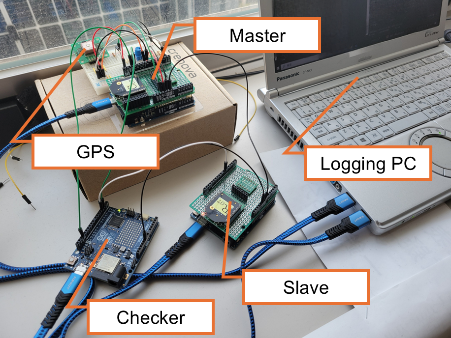
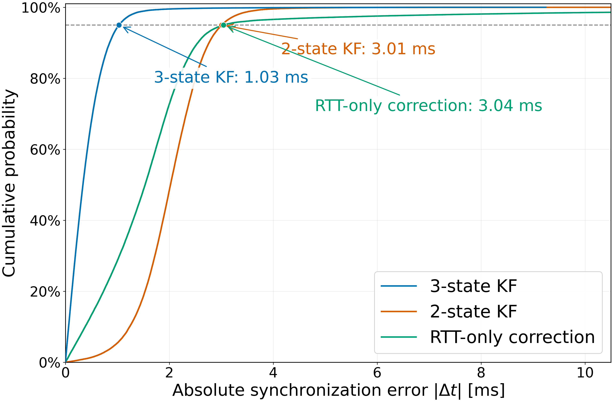

Start Here — What Is This Study About?
Wireless sensor nodes need a common time reference so that measurements acquired at different locations can be aligned correctly in time. However, when timestamp information is obtained at the application layer, the observation contains not only clock error but also processing and communication-delay effects.
1. Introduction
Time synchronization is important in wireless distributed sensing because measurements acquired by different nodes must be integrated on a common time axis.
In low-cost and resource-constrained wireless sensor networks, synchronization accuracy is affected by clock drift and variations in communication delay. RTT-based two-way synchronization can estimate the time relationship between nodes, but its application-layer observations also include processing and communication-delay components.
2. Objective
This study investigates the effectiveness of introducing a communication-delay-derived bias component into a three-state Kalman filter for RTT-based synchronization and evaluates its synchronization stability against a two-state KF and RTT-only correction.
Difference between the child-node logical time and the master reference.
Relative rate at which the clock offset changes with time.
An auxiliary state representing a bias-like delay component in the RTT observation.
3. System Overview
The master node is synchronized to GPS time. The child node communicates with the master through bidirectional ZigBee/RTT communication and corrects its logical clock based on the estimated clock states.
Synchronization performance is evaluated independently using 1-s synchronization pulses from the master and child nodes. The checker measures the external synchronization error \(\Delta t_n\).

Here, \(t_{s,n}\) and \(t_{m,n}\) are the child-node and master-node synchronization-pulse times observed by the external checker. This external measurement is used for performance evaluation rather than relying only on the filter's internal estimate.
4. Method
4.1 RTT Timestamp Exchange
Four timestamps are obtained during two-way communication. \(T_1\) is the child transmission time, \(T_2\) is the master reception time, \(T_3\) is the master transmission time, and \(T_4\) is the child reception time.
\(T_1\): transmit
\(T_4\): receive
\(T_2\): receive
\(T_3\): transmit
4.2 Offset Observation
Assuming approximately symmetric forward and reverse communication delays, the RTT-based offset observation is calculated as:
The important point is that \(z_k\) can contain both the clock offset and delay-related components. The proposed filter therefore does not treat the observation as a pure clock-offset measurement.
4.3 Three-State Kalman Filter
The state vector contains the clock offset \(\theta_k\), clock skew \(\dot{\theta}_k\), and an RTT-related bias-like component \(b_k\).
In this model, the RTT observation is explained by both the clock offset and the delay-derived bias state. The logical clock itself is corrected using the estimated offset and skew, while \(b_k\) acts as an auxiliary state for the RTT-related component.
4.4 Observation Quality Management
RTT observations are managed using a window, and the observation-noise covariance \(R\) is dynamically adjusted. This reduces the influence of unreliable RTT observations on clock-state estimation.
5. Experimental Setup
The three synchronization methods were evaluated under the same RTT-based wireless system for approximately 27.8 h using 1-s synchronization pulses.

| Parameter | Setting |
|---|---|
| Controller | Arduino UNO R4 WiFi |
| Wireless module | Digi XBee3 Zigbee 3.0 |
| Master reference | GPS PPS |
| Communication | Two-way ZigBee / RTT |
| Compared methods | Three-state KF / Two-state KF / RTT-only correction |
| Evaluation pulse | 1-s interval |
| Measurement duration | Approx. 27.8 h |
All three methods are compared using the external synchronization error measured by the checker. This allows the comparison to focus on actual node-to-node timing performance.
6. Results
Long-term synchronization performance was evaluated using the synchronization error over time and the empirical cumulative distribution function (ECDF) of the absolute synchronization error.


Three-State KF — Key Performance
Comparison of the Three Methods
| Method | Median \(|e|\) | 95th percentile \(|e|\) | >10 ms rate | >30 ms rate |
|---|---|---|---|---|
| RTT-only correction | 1.534 ms | 3.044 ms | 1.494% | 0.027% |
| Two-state KF | 2.022 ms | 3.010 ms | 0.008% | 0.0% |
| Three-state KF | 0.338 ms | 1.030 ms | 0.0% | 0.0% |
Improvement over the Two-State KF
7. Discussion
Why do the conventional methods behave differently?
The two-state KF and RTT-only correction show different relationships between nominal accuracy and large-error occurrence. This suggests that the center of the synchronization-error distribution and rare large-error events are not governed by exactly the same error mechanism.
RTT-only correction directly follows the RTT-based offset observation and therefore remains sensitive to large observation variations. The two-state KF smooths the clock states, which reduces large-error events, but communication-delay-related components can still be mixed into the offset and skew estimates.
Why is the three-state KF effective?
The three-state KF explicitly models an RTT-related bias-like component \(b_k\) in addition to offset and skew. The measured improvement is consistent with the interpretation that this additional state reduces the influence of communication-delay components on clock-state estimation.
8. Conclusion
This study investigated RTT-based time synchronization using a three-state Kalman filter that models clock offset, clock skew, and an RTT-related bias-like component as separate states.
In the approximately 27.8-h evaluation, the three-state KF achieved a median absolute error of 0.338 ms and a 95th-percentile absolute error of 1.030 ms, with no synchronization errors above 10 ms or 30 ms.
Compared with the two-state KF, the median and 95th-percentile absolute errors were reduced by 83.3% and 65.8%, respectively. These results support the effectiveness of the three-state model for stable long-term RTT-based synchronization.
Glossary
A network of distributed sensor nodes that acquire and exchange measurement data.
The elapsed time for a message to travel to another node and for a response to return.
The time difference between two clocks at a given instant.
A difference in clock rate that causes the offset to change with time.
A state-estimation method that combines a dynamic model and noisy observations.
A curve showing the fraction of measured absolute errors less than or equal to a given value.
References
- B. Sundararaman, U. Buy, and A. D. Kshemkalyani, “Clock Synchronization for Wireless Sensor Networks: A Survey,” Ad Hoc Networks, vol. 3, no. 3, pp. 281–323, 2005.
- K.-L. Noh, Q. M. Chaudhari, E. Serpedin, and B. W. Suter, “Novel Clock Phase Offset and Skew Estimation Using Two-Way Timing Message Exchanges for Wireless Sensor Networks,” IEEE Transactions on Communications, vol. 55, no. 4, pp. 766–777, 2007.
- X. Ni, T. Lu, S. Ye, Y. Zheng, P. Chen, and L. Chen, “Pair Nodes Clock Synchronization Algorithm Based on Kalman Filter for Underwater Wireless Sensor Networks,” Sensors, vol. 21, no. 13, 4426, 2021.
- J. Junker, A. Furuya, H. Kawai, M. Ueno, and M. Date, “Time synchronization method of wireless distributed sensor node and its application for real-time dust monitoring,” Optical Review, vol. 31, pp. 598–606, 2024.
Contact
Yutaka Hirai
Tokushima Bunri University
Japan
E-mail: s260304@stu.bunri-u.ac.jp